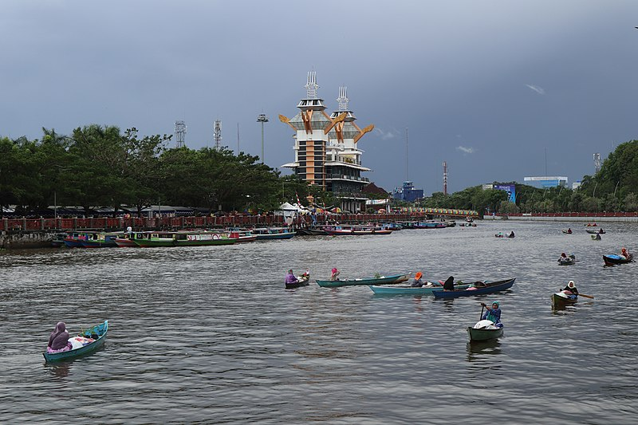
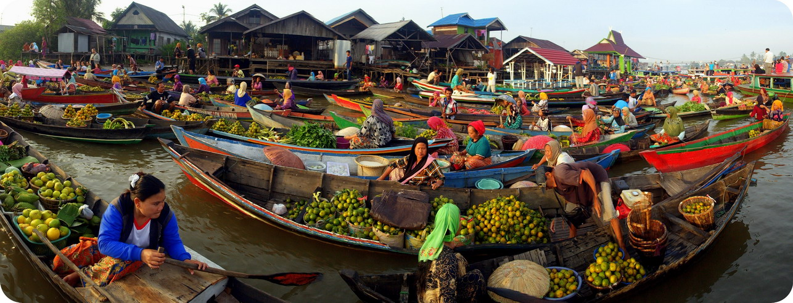
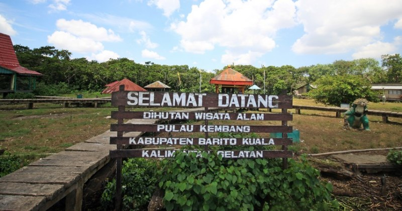

Sejarah

Kota Banjarmasin adalah salah satu kota di Provinsi Kalimantan Selatan, Indonesia. Kota Banjarmasin yang dijuluki Kota Seribu Sungai ini memiliki wilayah seluas 98,46 km² yang wilayahnya merupakan delta atau kepulauan yang terdiri dari sekitar 25 buah pulau kecil (delta) yang dipisahkan oleh sungai-sungai di antaranya Pulau Tatas, Pulau Kelayan, Pulau Rantauan Keliling, Pulau Insan dan lain-lain.
Berdasarkan data BPS Kota Banjarmasin tahun 2019, Kota Banjarmasin memiliki penduduk sebanyak 700.870 jiwa dengan kepadatan 7.118,32 jiwa per km². Wilayah metropolitan Banjarmasin yaitu Banjar Bakula memiliki penduduk sekitar 1,9 juta jiwa.
Geografis

Kota Banjarmasin secara geografis terletak antara 3°16'46'' sampai dengan 3°22'54'' lintang selatan dan 114°31'40'' sampai dengan 114°39'55'' bujur timur. Berada pada ketinggian rata-rata 0,16 m di bawah permukaan laut dengan kondisi daerah berpaya-paya dan relatif datar.
Wisata
Kota Banjarmasin memiliki berbagai objek wisata, baik wisata alam, wisata sejarah, wisata kuliner, maupun wisata pendidikan.
Pasar Terapung

Pasar Terapung Muara [Sungai] Kuin atau Pasar Terapung Sungai Barito adalah pasar terapung tradisional yang berada di atas sungai Barito di muara sungai Kuin, Banjarmasin, Kalimantan Selatan. Pasar Terapung Muara Kuin merupakan pusaka saujana Kota Banjarmasin. Para pedagang dan pembeli menggunakan jukung, sebutan perahu dalam bahasa Banjar. Pasar ini mulai setelah salat Subuh sampai selepas pukul tujuh pagi. Matahari terbit memantulkan cahaya di antara transaksi sayur-mayur dan hasil kebun dari kampung-kampung sepanjang aliran sungai Barito dan anak-anak sungainya.
Para pedagang wanita yang berperahu menjual hasil produksinya sendiri atau tetangganya disebut dukuh, sedangkan tangan kedua yang membeli dari para dukuh untuk dijual kembali disebut panyambangan. Keistemewaan pasar ini adalah masih sering terjadi transaksi barter antar para pedagang berperahu, yang dalam bahasa Banjar disebut bapanduk.
Kini pasar terapung Kuin dipastikan menyusul punah berganti dengan pasar darat. Banyak wisatawan yang berkunjung ke Kuin harus menelan kekecewaan karena tidak menjumpai adanya geliat eksotisme pasar di atas air.
Kepunahan pasar tradisional di daerah "seribu sungai" ini dipicu oleh kemaruk budaya darat serta ditunjang dengan pembangunan daerah yang selalu berorientasi kedaratan. Jalur-jalur sungai dan kanal musnah tergantikan dengan kemudahan jalan darat. Masyarakat yang dulu banyak memiliki jukung, sekarang telah bangga memiliki sepeda motor atau mobil.
Pulau Kembang

Pulau Kembang adalah sebuah delta yang terletak di tengah sungai Barito yang termasuk di dalam wilayah administratif kecamatan Alalak, Kabupaten Barito Kuala, provinsi Kalimantan Selatan. Pulau Kembang terletak di sebelah barat Kota Banjarmasin. Pulau Kembang ditetapkan sebagai hutan wisata berdasarkan SK. Menteri Pertanian No. 788/Kptsum12/1976 dengan luas 60 Ha.
Pulau Kembang merupakan habitat bagi kera ekor panjang (monyet) dan beberapa jenis burung. Kawasan pulau Kembang juga merupakan salah satu objek wisata yang berada di dalam kawasan hutan di Kabupaten Barito Kuala.
Di dalam kawasan hutan wisata ini terdapat altar yang diperuntukkan sebagai tempat meletakkan sesaji bagi " penjaga" pulau Kembang yang dilambangkan dengan dua buah arca berwujud kera berwarna putih (Hanoman), oleh masyarakat dari etnis Tionghoa-Indonesia yang mempunyai kaul atau nazar tertentu. Seekor kambing jantan yang tanduknya dilapisi emas biasanya dilepaskan ke dalam hutan pulau Kembang apabila sebuah permohonan berhasil atau terkabul.